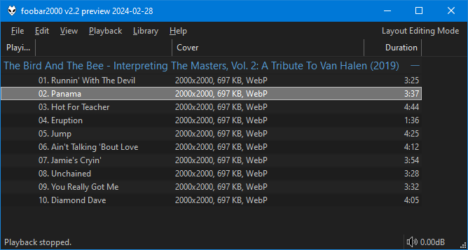

Cover Utils#
Important
This is a combined replacement for foo_cover_info and
foo_cover_resizer. If you have either/both installed,
you must remove them first.
Note that this uses a separate database for front cover info storage so files would need scanning again. Also, different title format fields are used for display. See below.
Usage#
Use the right click menu on any playlist/library selection and you'll find
a Cover Utils sub menu.
Resize#
This option will resize existing embedded art. Reading most common image
types is supported but you must choose JPG or WebP when saving.
Convert without resizing#
Converts existing embedded art without resizing. You must choose
JPG or WebP.
Browse for file, resize and attach#
This option lets you browse for an image file and will then resize it
before attaching it to the current selection. Images already smaller than
the specified max size will not be processed. You should attach those
via the native foobar2000 options under the
Tagging menu.
Browse for file, convert and attach#
Use the file picker and then choose to convert the file to JPG or WebP.
Remove all except front#
Since most people only want front covers, this is a handy method for removing all the other types.
Scan for info#
Because it's not possible to query files for embedded album art within foobar2000, you can use this option to process a selection of files and store the results in a database.
Note
The component automatically tracks all updates to front cover
properties when using built in methods to add/convert/resize etc.
It's not possible to track changes from native foobar2000 album art
operations so if you do that, files would need re-scanning
manually.
Data is available in the following fields which are available wherever title formatting is supported.
| Field | |
|---|---|
%cover_utils_front_width% |
|
%cover_utils_front_height% |
|
%cover_utils_front_format% |
JPEG, PNG, WebP, etc. |
%cover_utils_front_size% |
Nicely formatted image size in KB/MB. |
%cover_utils_front_bytes% |
Raw image size. |
Note
Database records are attached to the %path% of each file. Records
are preserved if files are renamed/moved with File operations.
If files are renamed/moved externally, records would be orphaned and the files would need
scanning again.
Records have a lifetime of 4 weeks if they are
not included in the Media Library or playlist.
Example
Here's a custom column configuration that would show all information if present.
[%cover_utils_front_width%x%cover_utils_front_height%, %cover_utils_front_size%, %cover_utils_front_format%]

You can also perform playlist/library searches using query syntax like this:
%cover_utils_front_width% PRESENT
Clear cover info#
This clears all existing info for the current selection.
Changes#
1.1#
- Bump minimum requirements to
foobar20002.24andWindows 10. - Compiled with the latest
foobar2000SDK.
1.0#
- Initial release